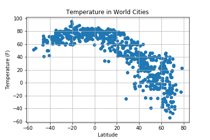

Temperature and Latitude
Considering the "Temperature in World Cities", it is clear that the highest temperatures are found at and below the equator. As you rise up north of the equator, the temperaturr has a steady decrease. This is easily explained by the fact that the northern hemisphere is currently experiencing colder weather winter while the southern hemisphere is currently experiencing warmer weather/summer.